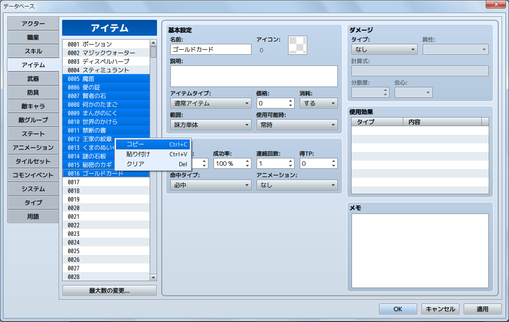
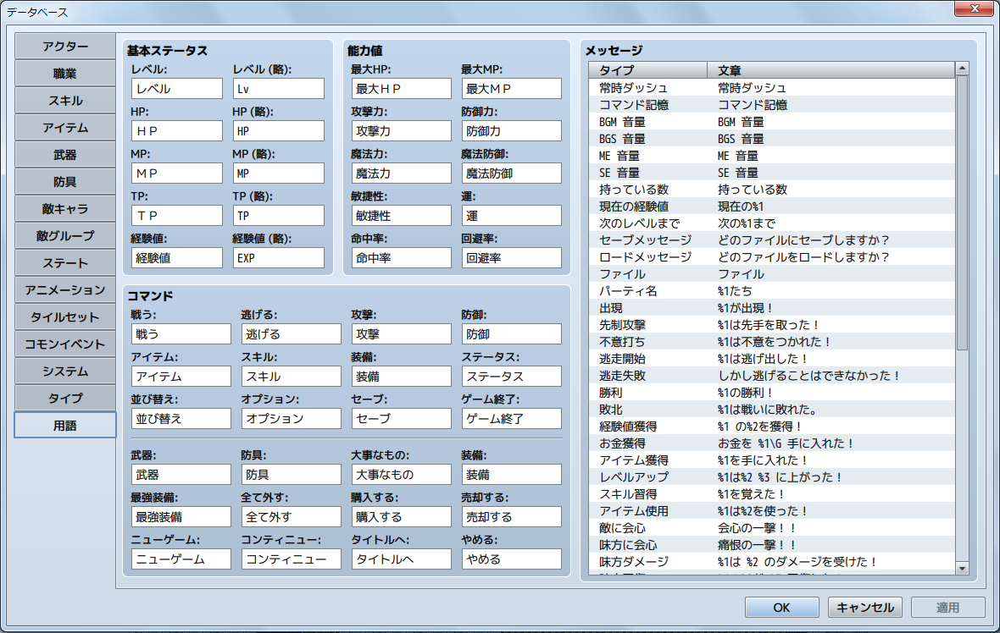
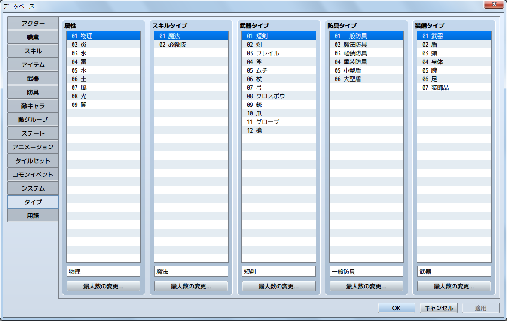

データベース
データベースではキャラクターやアイテム類、スキル、魔法など、ゲームで登場する各データを編集管理します。
主な特徴
- データベースをボリュームアップ
- データベース項目の最大数を変更しました。
スキル、アイテム、武器、防具、敵キャラ、敵グループは2000項目まで設定可能です。
（その他は最大1000項目） - より充実し使いやすくなった機能
-
- リストボックスで複数選択⇒コピーが可能になりました。

- 従来はスクリプトで変更していたメッセージを［用語］タブで管理・変更できるようになりました。

- 装備品の種類（腕装備、足装備など）を［タイプ］から増減できるようになりました。

- ゲーム内のメニューに表示されるコマンドの表示/非表示を［システム］タブで管理できるようになりました。
- ［アイテム］タブにて、アイテムタイプに［隠しアイテムA,B］が選択可能になりました。
- リストボックスで複数選択⇒コピーが可能になりました。